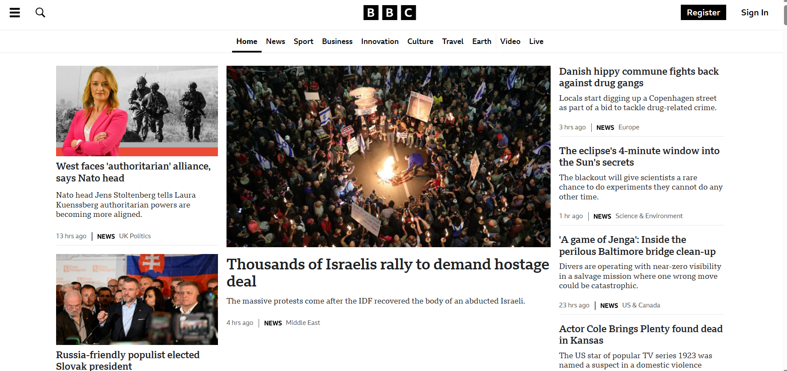

Concept of Hyperlinks
Introduction
Hyperlinks are fundamental elements of the internet. They connect various resources, enabling users to navigate seamlessly between web pages, documents, and other online content with just a click. Essentially, hyperlinks serve as gateways to the vast network of information that comprises the World Wide Web.
Types of Hyperlinks
Hyperlinks come in different forms, each catering to specific user interactions and content types:
- Text Links: These are hyperlinks embedded within text content, usually highlighted and underlined to distinguish them from regular text.
- Image Links: Hyperlinks can also be associated with images, allowing users to navigate by clicking on images instead of text.
- Button Links: In some cases, hyperlinks are styled as buttons to enhance their visual prominence and encourage interaction.
- Navigation Links: These hyperlinks are commonly used within website navigation menus, guiding users to different sections or pages of the site.
- Anchor Links: Hyperlinks that navigate to specific sections within a webpage, often used for table of contents or internal navigation.
Example
Below is an example of a text hyperlink:
Hyperlinks are extensively utilized across the web. For instance, consider the homepage of the BBC website. It contains numerous hyperlinks directing users to various news stories, sections of the site, login/registration pages, and more, facilitating easy exploration of the site's content.
Importance of Hyperlinks
The significance of hyperlinks in the online ecosystem cannot be overstated. Here's why hyperlinks are crucial:
- Enhanced User Experience: By providing clickable pathways between content, hyperlinks make navigation intuitive and user-friendly, contributing to a positive browsing experience.
- Content Discoverability: Hyperlinks play a pivotal role in making information accessible and discoverable. They allow users to explore related topics, dive deeper into specific subjects, and access a wealth of knowledge across the web.
- Search Engine Optimization (SEO): Hyperlinks are essential for SEO, as they help search engines crawl and index web pages effectively. Inbound links from reputable sources can also improve a website's search engine rankings.
- Engagement and Interactivity: Hyperlinks encourage interaction by inviting users to explore additional content, engage with multimedia resources, and participate in online discussions and communities.
Implementation in Web Development
In web development, hyperlinks are implemented using HTML anchor tags (<a>) and the href attribute to specify the URL of the destination. For example:
<a href="https://www.example.com">Visit Example.com</a>
This creates a clickable link that directs users to the specified URL when clicked.
Web developers often use CSS to style hyperlinks, ensuring they align with the overall design aesthetic of the website. Customizations may include adjusting colors, font styles, hover effects, and link behaviors to enhance visual appeal and user experience.
Implementation in Browsers
From the browser's perspective, hyperlinks serve as triggers for HTTP requests to retrieve and render content from remote servers. When a user clicks on a hyperlink, the browser initiates an HTTP GET request to the URL specified in the hyperlink's href attribute.
Modern browsers offer an array of features and functionalities related to hyperlinks, including:
- Tabbed Browsing: Users can open multiple web pages in separate tabs, facilitating multitasking and efficient navigation.
- History Navigation: Browsers maintain a history of visited web pages, allowing users to revisit previously viewed content using forward and backward navigation buttons.
- Bookmarking: Users can bookmark favorite web pages for quick access later, organizing their browsing experience.
- Developer Tools: Browsers provide developer tools for inspecting and debugging hyperlinks, monitoring network requests, and optimizing website performance.
With advancements in web technologies such as HTML5, hyperlinks have evolved to support additional features like cross-origin resource sharing (CORS) and the download attribute for downloading linked files.
Interactive Example with AJAX
Let's incorporate an interactive example using AJAX (Asynchronous JavaScript and XML) to demonstrate dynamic content loading:
Load Chuck Norris Joke